随着JumpServer开源堡垒机的市场影响力和用户群体的不断扩大，越来越多的新用户选择使用JumpServer堡垒机来代替企业原有的运维审计系统。这样一来，管理员就需要对原有运维审计系统中的数据进行导入操作，将原有的运维审计环境迁移到JumpServer开源堡垒机中。
在资产和用户数比较少的场景下，用户可以参考JumpServer开源堡垒机的社区官方文档：https://docs.jumpserver.org/zh/master/admin-guide/quick_start/#_3，通过手动创建资产、系统用户、授权规则的方式，快速实现数据初始化，搭建运维管理平台。而面对资产和用户数较多的情况，手动创建的方式无法满足用户大规模数据初始化的需求，就需要对原有的运维审计系统做相应的数据迁移。
本文重点介绍如何快速将原有运维审计环境中的数据迁移到JumpServer平台中，从而开启JumpServer的运维审计管理之旅。JumpServer开源堡垒机遵循4A（包含认证Authentication 、授权Authorization、 账号Accounting和审计Auditing）规范，因此用户、资产、系统用户和授权规则这些基础数据是JumpServer初始化平台所必须拥有的。本文所介绍的JumpServer数据迁移工作也将重点围绕这四个部分的数据进行处理，并基于JumpServer v2.28.1版本进行操作演示。
如何快速将数据迁移到JumpServer开源堡垒机？
1. 在JumpServer的“用户管理”菜单中选择“用户列表”→“导入创建”，下载用户数据模板。
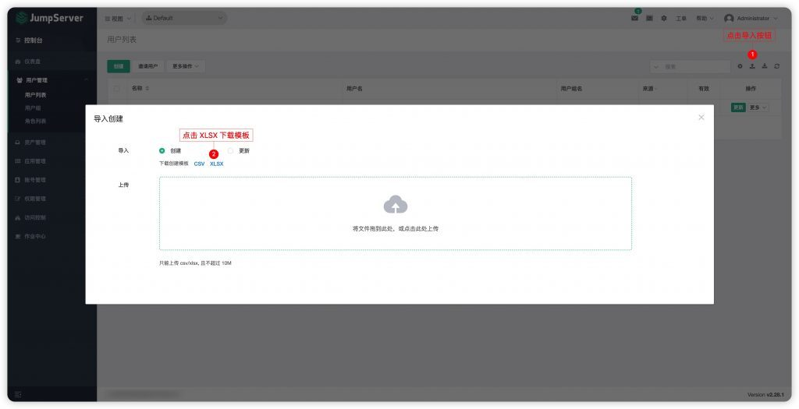
▲ 图1 下载JumpServer用户数据模板2. 将所需导入的用户数据整理成JumpServer的数据表格格式（以某厂商的用户数据为例），需要注意以下字段：
■ 名称：不可以为空，可以重复；
■ 用户名：不可以为空，不可以重复且唯一；
■ 邮箱：不可以为空，不可以重复且唯一，不可以为中文；
■ 密码：如果通过表格导不出原厂商的明文密码，建议填写一个统一的密码；
■ 需要更新密码：如果密码字段没有设置统一密码，则这个值为False；如果为统一密码并且希望在用户第一次登录的时候重置密码，则这个值更改为True；
■ 用户组：默认为Default组织，如果需要自定义组织的话，则需要选择“用户管理”→“用户组”，创建组织后点击名称进入详情页，查看组织ID并填写对应的值；
■ 系统角色：选择“用户管理”→“角色列表”→“系统角色”，点击名称进入详情页，查看每个系统角色的ID并填写对应的值；
■ 组织角色：选择“用户管理”→“角色列表”→“组织角色”，点击名称进入详情页，查看每个组织角色的ID并填写对应的值；
■ 密码策略：需要填写Custom值，才可以保证所填写的密码生效；
■ 某厂商原平台数据和JumpServer字段的对应关系为：真实姓名→名称、用户名→用户名、密码→密码、Email→邮箱。
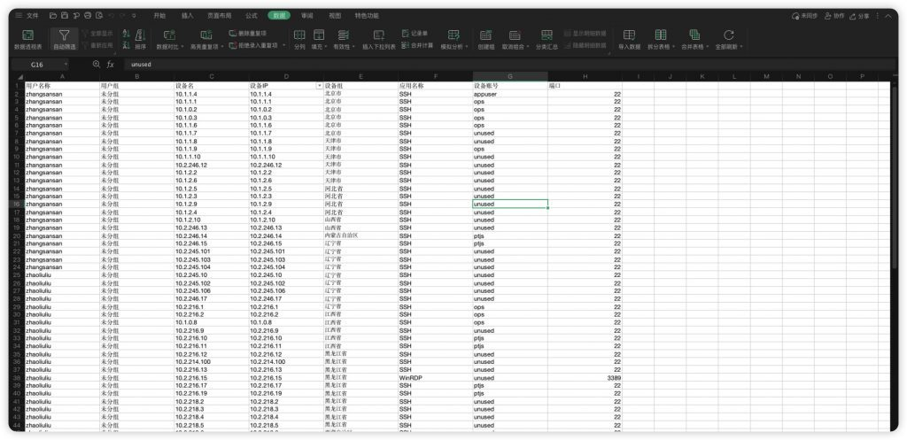
▲图2 某厂商原平台的用户数据表格▲ 图3 整理后的JumpServer用户数据表格
3. 通过“导入创建”功能，将整理后的用户数据表格导入JumpServer，导入成功后刷新用户列表。
▲ 图4 导入用户数据表格
▲ 图5 JumpServer用户列表
二、资产节点数据源迁移
1. 处理原平台的资产节点数据（以某厂商原平台设备组数据为例）；
某厂商的设备组对应JumpServer的资产节点，为了避免设备组有重复数据，首先需要对表格进行去重处理，并将数据表格名称重命名为“assetsNode.xlsx”。
▲ 图6 某厂商原平台设备组数据表格
2. 处理JumpServer资产节点数据，由于JumpServer资产节点具有无限层级的特殊性，因此需要使用脚本导入的方式完成数据处理。由于某厂商原平台设备组数据表格只有一列数据，因此都作为一级节点导入JumpServer。
■ 使用Python脚本源码
使用时需要注意以下三个参数：
#需要添加节点数据的JumpServer平台地址（示例参数： jms_url = 'http://192.168.1.2/api/v1/assets/nodes/'）；
#private token按照其官网文档获取，地址为：https://docs.jumpserver.org/zh/master/dev/rest_api/#api_2
（示例参数：token = 'ed0387512432cbbaff9fd4050be8d269b747f274'）；
#需要添加到xxx组织下的资产节点数据的组织ID，可以在“组织列表”中点击组织名称获取，默认为“Defalut”组织下（示例参数：org = '00000000-0000-0000-0000-000000000002‘）。
■ 如何运行代码
① 登录部署JumpServer的服务器；
② 把处理后的数据表格用“docker cp assetsNode.xlsx jms_core:/opt”命令复制到指定的容器内；
③ 执行“docker exec -it jms_core bash”进入容器内；
④ 在容器内执行“cd /opt”进入opt目录，接着执行“vi importNode.py”创建一个文件，把上述代码复制到文件内，执行“wq“保存退出；
⑤ 执行“python importNode.py”命令即可，具体代码如下：
from openpyxl import load_workbook
def get_xlsx_content():
# 打开一个workbook
wb = load_workbook(filename="/opt/assetsNode.xlsx")
# 获取当前活跃的worksheet,默认就是第一个worksheet
# ws = wb.active
# 当然也可以使用下面的方法
# 获取所有表格(worksheet)的名字
sheets = wb.get_sheet_names()
# 第一个表格的名称
sheet_first = sheets[0]
# 获取特定的worksheet
ws = wb.get_sheet_by_name(sheet_first)
# 获取表格所有行和列，两者都是可迭代的
rows = ws.rows
lines = []
# 迭代所有的行
for row in rows:
for col in row:
item = {
"value": col.value,
"full_value": col.value
}
lines.append(item)
return lines
# 添加数据方法
def save_node_data(jms_url, data, token, org):
import requests, json
url = jms_url
headers = {
"Authorization": 'Token ' + token,
'X-JMS-ORG': org
}
response = requests.post(url, data, headers=headers)
print(json.loads(response.text))
if __name__ == '__main__':
nodes = get_xlsx_content()
# 需要添加节点数据的jms平台地址
jms_url= 'http://192.168.1.2/api/v1/assets/nodes/'
token= 'ed0387512432cbbaff9fd4050be8d269b747f274'
# 需要添加到那个组织下的资产节点数据的 组织Id
org = '00000000-0000-0000-0000-000000000002'
nodes.pop(0)
for node in nodes:
save_node_data(jms_url, node, token, org)
▲ 图7 资产节点导入后的执行结果
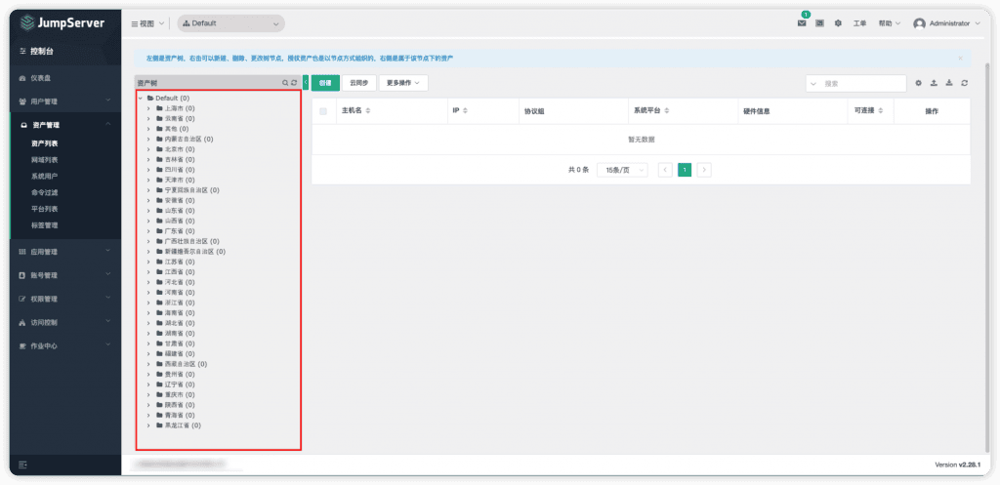
▲ 图8 JumpServer资产节点列表三、资产数据源迁移步骤
1. 处理原平台的资产数据（以某厂商原平台设备权限数据为例）；
由于某厂商在设备管理界面无法直接导入设备和设备组的关联关系，因此可以通过设备的授权关系导入设备和设备组的关联关系，或者可以通过数据库表关联查询得到关联关系的数据表。某厂商的设备即对应JumpServer资产，JumpServer中资产名称和IP是不可以重复的，因此为了避免设备有重复数据，首先需要对表格进行去重处理。
▲ 图9 某厂商原平台设备权限数据表格
2. 在JumpServer的“资产管理”菜单中选择“资产列表”→“导入创建”，下载资产数据模板；
如果是初始平台没有任何数据，那么导出来的模板是空的，因此我们需要创建一条资产以方便查看数据格式。
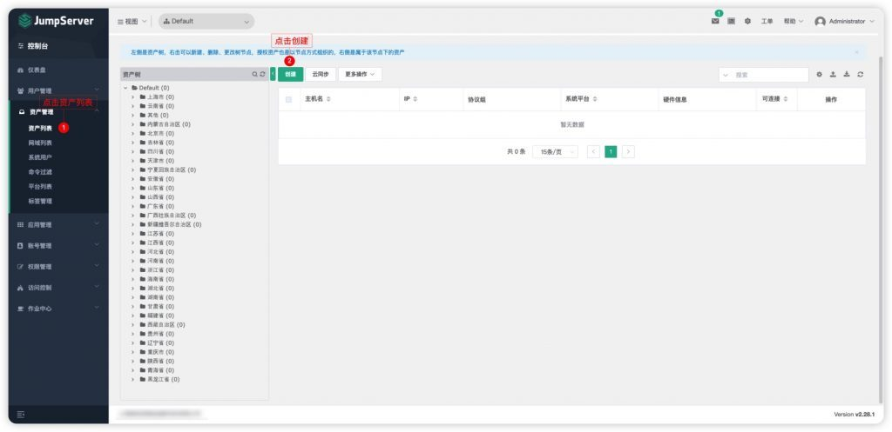
▲ 图10 创建资产以方便查看数据格式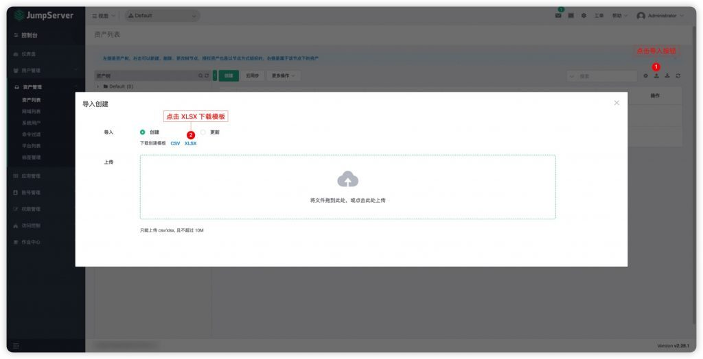
▲ 图11 下载JumpServer资产数据模板3. 将所需导入的资产数据整理成JumpServer的资产数据表格格式，注意事项包括：
■ 某厂商原平台表格所需的字段为：设备名、设备IP、设备组、应用名称、端口；
■ JumpServer资产列表表格所需的必填字段为：主机名、IP、系统平台、协议组、节点名称；
■ 某厂商数据和JumpServer字段对应关系为：设备名→主机名、设备IP→IP、设备组→节点名称、应用名称→系统平台、端口→协议组；
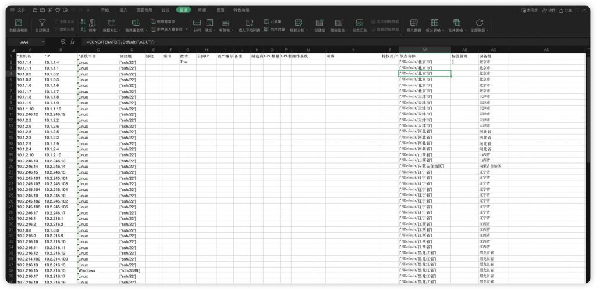
▲ 图12 整理后的JumpServer资产表格4. 通过“导入创建”功能，将整理后的资产数据表格导入JumpServer，导入成功后刷新资产列表。
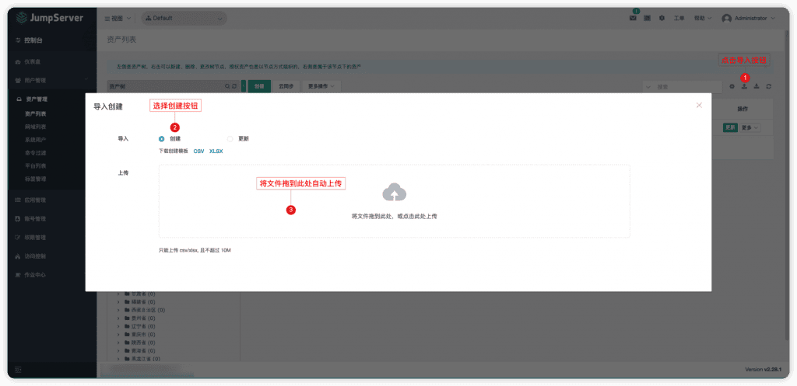
▲ 图13 导入资产数据表格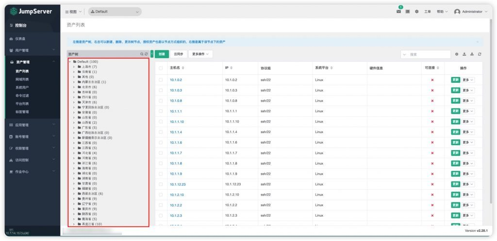
▲ 图14 JumpServer资产列表四、系统用户数据源迁移
1. 在JumpServer的“资产管理”菜单中选择“系统用户”→“导入创建”，下载系统用户数据模板；
如果是初始平台没有任何数据，那么导出来的模板是空的，因此需要先创建两条SSH协议以及RDP协议的系统用户，以方便查看数据格式。
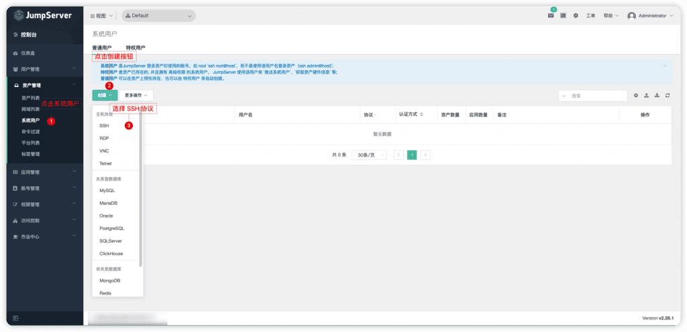
▲ 图15 创建系统用户以方便查看数据格式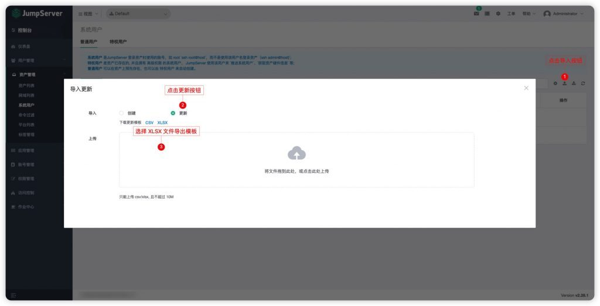
▲ 图16 下载JumpServer系统用户模板2. 将所需导入的系统用户数据整理成JumpServer的系统用户数据表格格式，首先删除JumpServer数据表格中的“ID”列，并注意以下几个重要字段（以某厂商设备账号数据为例）：
■ 名称：指这条记录的名称（并非指这台服务器的登录名称）；
■ 用户名：指服务器登录账号；
■ 类型：取值Common（普通用户) 和Admin（特权用户），不填写默认为普通用户。如果填入特权用户，密码字段必填，若不填，导入时不会报错，但是用户无法正常使用；
■ 认证方式：取值Auto（托管密码）和Manual（手动输入），不填写默认为托管密码。手动输入时密码字段可以不必填写，托管密码时，密码字段必填，若不填，导入时不会报错，但是用户无法正常使用；
■ 某厂商数据和JumpServer字段对应关系为：账户名称→名称、账户名称→用户名、账号密码→密码、账号应用→协议。
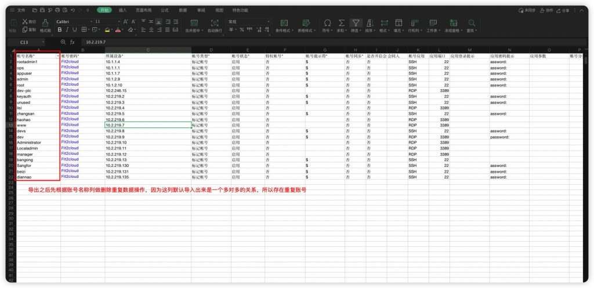
▲ 图17 某厂商设备账号数据表格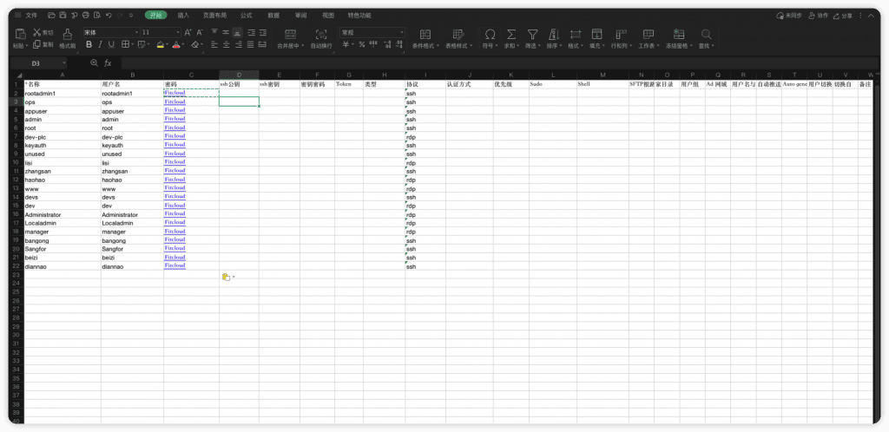
▲ 图18 整理后的JumpServer系统用户表格3. 通过“导入创建”功能，将整理后的系统用户数据表格导入JumpServer，导入成功后刷新用户列表。
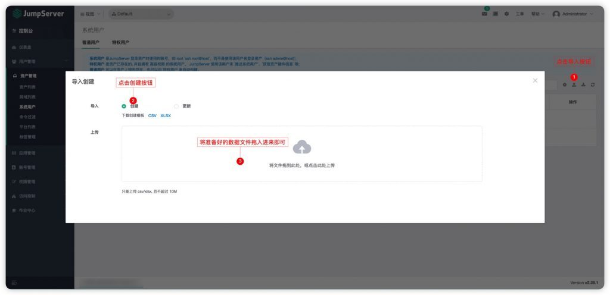
▲ 图19 导入系统用户数据表格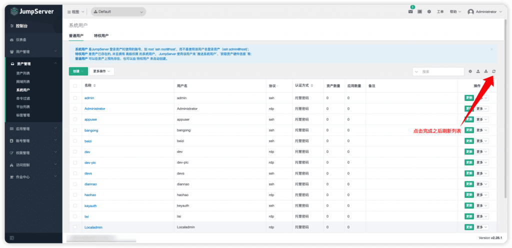
▲ 图20 JumpServer系统用户列表五、授权规则迁移
1. 在JumpServer权限管理菜单中选择“资产授权”→“导入创建”，下载资产授权规则数据模板；
由于每个用户场景的授权关系都不一样，此处以JumpServer平台授权规则表格模板为例，说明以下重要字段的取值：
■ 名称：这条授权关系的描述（必填项）；
■ 动作：拥有这条授权关系的用户支持的动作值（上传下载文件/复制粘贴，默认全有，导入文件时这列保持为空即可）；
■ 用户名称：用户的用户名（格式：['zhnagsan','lisi']）；
■ 用户组名称：用户组列表的名称（格式：['Defalut','Defalut2']）；
■ 资产名称：资产列表的主机名（格式：['10.1.14.178','10.1.14.179']）；
■ 节点名称：导入资产时的节点名称（比如要授权的资产在“Default”→“ABC”下面，那么这个字段取值则为['/Default/ABC/']）；
■ 用户名称：资产管理中系统用户列表的名称字段（格式：['admin','root']）。
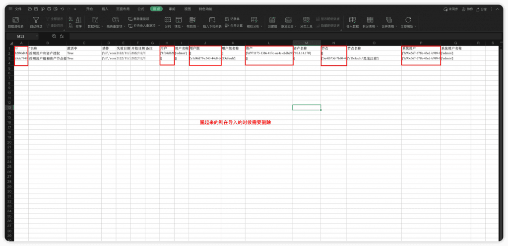
▲ 图21 JumpServer资产授权规则表格模板2. 以某厂商原平台的资产授权数据为例，将数据整理成JumpServer的授权规则表格格式，注意事项包括：
■ 按照用户和资产授权：指用户名为admin的用户，拥有10.1.14.178这台资产的Dev系统用户的连接权限；
■ 按照用户组和资产节点授权：指在Default用户组下面的所有用户，都拥有资产节点为黑龙江省下所有资产的admin系统用户的连接权限；
■ 若既要填写资产又要填写资产节点，则两个值取并集，用户和用户组同理；
■ 在进行规则授权之前，需要把前面的数据导入完成，填写的用户名称、用户组名称、资产名称、节点名称、系统用户名称等都需要在平台内存在才可以完成规则授权。
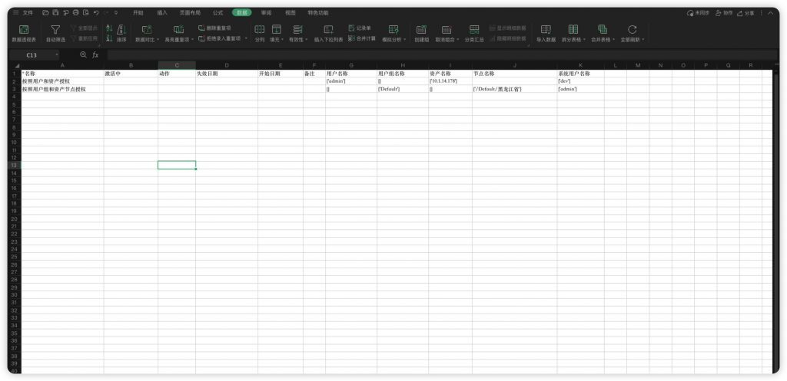
▲ 图22 整理后的JumpServer授权规则表格3. 通过“导入创建”功能，将整理后的授权规则表格导入JumpServer，导入成功后刷新资产授权列表即可。
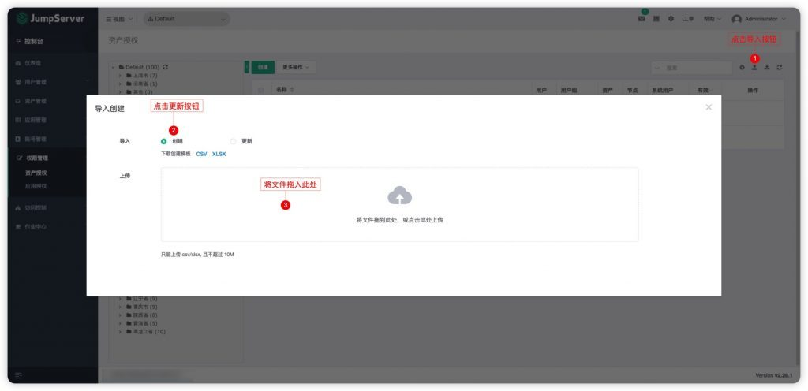
图23 导入授权规则表格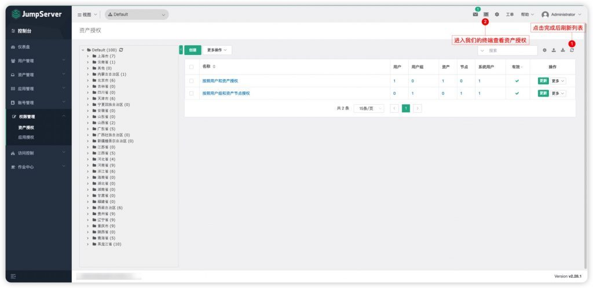
▲ 图24 JumpServer授权规则列表